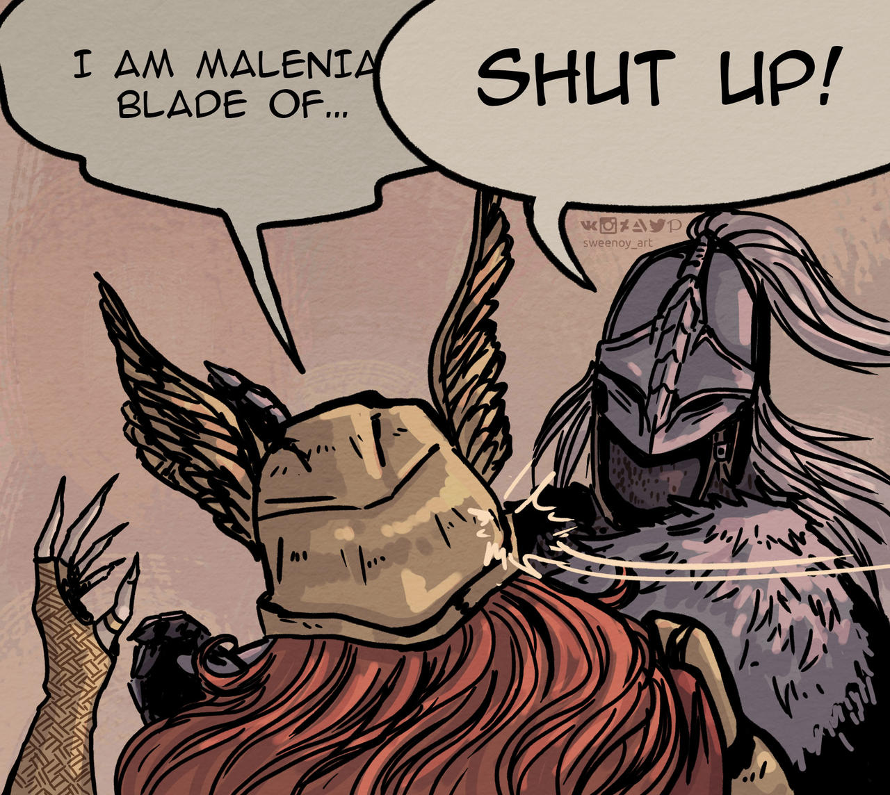

The question outline works!!! Weka!!! (I'm proposing Weka as a substitute for eureka). I felt significantly more organized and directed when studying, and when I felt like I was wasting time I could go back and see what I had deemed important and if I should move on or not. The main problem this past week and with the approach of question outlines was that 1) I misjudged the time I would take on certain sections/questions but also 2) I satisfied myself with small amounts of work very quickly. I think I'm very used to the 25/5 pomodoro strategy for two hours that I already switch to break mode, but I can most definitely push for 3 hours. The other problem with this approach is the lack of conventional problems but I'm not sure how to solve that one just yet. All in all a solid week :) Also because the dumb flappy bird clone I've been making has been coming along slowly but surely. I got nice physics working for the jump and a column of pipes to slide across the screen. Code organization could definitely be better but that will come with practice and consistency. I'm getting to a point where I'm spending too much time on it though so I need to finish soon and move on to the next one. Hey maybe I'll have a full section for this next time. GMTK game jam next weekend looking realllll thicc...
Wekas shit the equivalent of their body weight in a day.
Given a set $X$, a topology is a collection $T$ of subsets of $X$ with two main properties: 1) the empty set is contained in the collection and 2) it is closed under arbitrary unions and finite intersections. Such a set $X$ could then be referred to as a topological space. The terminology for comparing two topologies is that one is coarser or finer than the other. I'm just going to remember it by "$T_1$ is finer than $T_2$" $\iff$ "$T_1$ contains $T_2$". Munkres gave a good analogy of a truckload of rocks - if you were to pulverize some of them to make them more granular, you'd be making a finer collection of rocks (therefore obviously having more rocks than what you started with) but in terms of sets, it would be a superset of what you started with. Also we call elements of a topology open sets.
A basis for a topology is a collection of open subsets that contain the entire topological space as a union of its elements and such that every element of the topology is a union of elements of this collection. This needs some unpacking but first, the formal definition (from memory so maybe a bit lackin): A basis $B$ of a topological space $X$ is a collection of sets such that
That second property took me a little bit to unpack but it essentially amounts to what I said before - every element of the topology generated by this collection can be expressed as an arbitrary union of basis elements. How? Well in english it's stating that if an element of the topological space exists at the intersection of two basis elements, then it must also be contained in a basis element that is a subset of that intersection. Okay cool but how does that guarantee us a topology? Okay consider a set $\{a,b,c,d,e\}$ and take a collection $\{\{a,b,c\}, \{c,d,e\}\}$. We can clearly see that every element of the set is contained in some element of the collection. At this point I'll acknowledge that I've been omitting (and what wasn't realizing when I was thinking about this) that this is really a discussion about how the basis generates a topology. The point of a basis is to fully determine a topology - usually fully expressing every element of a topology is too much work so it helps to be able to express every element as something else - in this case arbitrary unions of basis elements. This is similar to linear combinations of basis vectors in linear algebra. So what happens if we try to generate a topology (take arbitrary unions) with that collection (notice that the intersection isn't part of the collection)? Well we just don't get a topology! Arbitrary unions of that collection give us $\{\emptyset, \{a,b,c\}, \{c,d,e\}, \{a,b,c,d,e\}\}$, but this is not closed under finite intersections!!
Okay that might not have been the best explanation... but in essence the way that property is stated makes it easier to check, but it's easier to remember that elements of a topology can be expressed as unions of basis elements. Okay that's the talk about why that second condition is necessary and not having it breaks things. But given a "valid" basis, are we sure it actually generates a topology? The formal statement about how a topology is generated from a basis is as follows:
(Had to copy that one but I promise I understand it). Ok so - that second condition before is also indirectly stating that the intersection of two basis elements can be expressed as the union of basis elements. Then we can see that the topology generated like this is actually already accounting for finite intersections as arbitrary unions, so we only have to worry about arbitrary unions when talking about a topology in terms of its basis. The point is that saying "$\forall x \in X, x \in B \subseteq U$" is the same as saying arbitrary unions. Also note that every topology has a basis but it doesn't have to be unique. However, a basis will only generate one topology.
Okay that was a lot so let's speed through some stuff. A subbasis is a "weaker" basis. It's a collection of subsets of a topological space that generates a topology by taking arbitrary unions of finite intersections of its elements. A relation on a set $A$ is a subset of $A \times A$ with a certain rule; the order relation has three , which are (poorly expressed) that an element cannot relate to itself, every pair of elements has some relation, and transitivity. Given a set with a simple ordering relation on it, the collection of all open intervals, and all half open intervals with the min or max as a bound (should it exist) forms a topology.
Didn't get through all that I wanted to but this was still a lot :) will patch up and push forward in next weekend's log.
Besides 4th of July, I got my ass up every day this weekend and worked out every morning. I haven't even pushed that hard but it's crazy how even the bare minimum of consistency with exercise just makes me feel so much better in general. I feel better about my day and just more motivated to pursue things. I'm gonna keep it up this weekend and also go to the all for some tennis as well. The little bit of tennis I've played lately has told me loud and clear that my legs are SLACKIN and I wanna do something about it. If I can wake up earlier I can bike to the wall in the morning. There, boom, that's the goal for this week, to do that at least one day.
Unrelated - did you know that Malenia is the Blade of Miquella?
